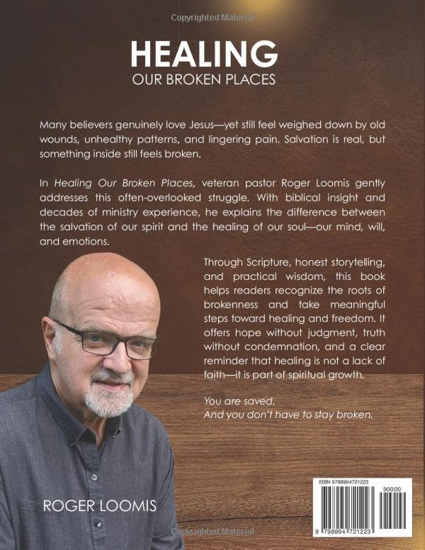

Books by Roger Loomis
For pastors, church leaders, parents, and serious Christ followers.
For pastors, church leaders, parents, and serious Christ followers.


Helping One Another to Reach Our Full Potential in Christ as We Allow God to Heal Our Wounded Soul
Many believers love Jesus deeply — yet still carry wounds, patterns, and struggles that don't seem to go away. Why is that? In Healing Our Broken Places, Roger Loomis addresses the often-overlooked reality that salvation and healing are not the same thing. While our spirit is made new in Christ, our soul — our mind, will, and emotions — may still carry pain from the past.
With biblical clarity, pastoral wisdom, and real-life insight, this book helps you:
This is not about condemnation — it's about freedom. Whether you are struggling personally or helping others in ministry, Healing Our Broken Places offers a clear and compassionate path toward restoration. You'll discover that healing is not only possible — it's part of God's plan for your life.
You are saved. And you don't have to stay broken.
Buy Now on Amazon Read a Preview
A Practical Guide to Biblical Parenting
Parenting doesn't come with a handbook — until now. Packed with wisdom, humor, and real-world advice, Raising Parents Is Tough offers practical tools for raising children with love, integrity, and Biblical principles.
Written by Roger Loomis — a pastor, husband, father of four, and grandfather — this guide covers everything from disciplining toddlers to navigating teen challenges, managing blended families, and embracing the empty nest. With insights from Scripture and trusted experts, this is the ultimate survival manual for today's parents.
Buy Now on Amazon Read a Preview
Lessons for Navigating Ministry Challenges
Pastors face unique and often overlooked challenges in today's church environment. Monday Morning Preacher explores 40 real-world issues — from declining attendance to internal conflicts — that pastors must identify and address to strengthen their churches.
With practical insights, reflection questions, and wisdom from 43 years of ministry, Roger Loomis offers a guide for both new and seasoned pastors to navigate their calling with clarity and purpose. A must-read for anyone passionate about healthier churches and impactful ministry.
Buy Now on Amazon Read a PreviewA Foundation for Serious Christ Followers
This guide for serious Christ followers lays a foundation for understanding the Bible and living out the Christian life as a race. Covering salvation, spiritual disciplines, and summaries of every book in the Bible, this manual helps believers stay the course and finish strong in their faith.
Topics covered:
Printed copies available for group studies — contact for pricing.
These books are for pastors, church leaders, and anyone passionate about supporting the local church — whether you're a new pastor navigating your first ministry, a seasoned leader facing modern challenges, a committed follower of Christ, or a church member wanting to understand and strengthen your congregation. These books offer practical insights and teaching for everyone. They're especially helpful for those leading or attending smaller churches who want to build healthier, more enduring ministries.